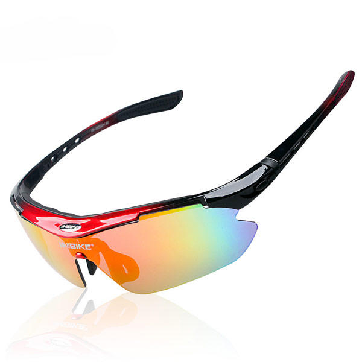

El ciclismo es un deporte y medio de transporte que tiene sus orígenes a principios del siglo XIX. Se le atribuye la invención de la bicicleta a Karl Drais, un barón alemán, quien en 1817 construyó una máquina de madera que se movía mediante la fuerza humana y se llamó "máquina corredora". Sin embargo, este dispositivo no se parecía mucho a las bicicletas modernas.
El punto de partida del ciclismo se encuentra en el siglo XIX con la invención de la bicicleta. Karl Drais, un barón alemán, creó una máquina de madera en 1817 que se considera como un precursor de la bicicleta.
En 1860, se introdujo el "Velocípedo," también conocido como "Boneshaker" debido a su incómodo paseo sobre carreteras empedradas. Esta bicicleta fue una de las primeras en parecerse a las bicicletas modernas, aunque seguía siendo incómoda de montar.
A finales del siglo XIX, surgió el "Penny Farthing," una bicicleta con una gran rueda delantera y una pequeña rueda trasera. Este diseño se destacó por su apariencia distintiva, pero también presentaba desafíos de seguridad.
Fue a finales del siglo XIX y principios del siglo XX que las bicicletas modernas con cadenas y neumáticos de goma se convirtieron en populares. Esto permitió un ciclismo más cómodo y eficiente.
El ciclismo en la actualidad es un deporte y medio de transporte ampliamente practicado en todo el mundo. Se ha convertido en una actividad versátil que abarca desde el ciclismo de competición de alta velocidad hasta el cicloturismo y el ciclismo recreativo. Los avances tecnológicos han llevado a la creación de bicicletas cada vez más especializadas, desde bicicletas de montaña para terrenos accidentados hasta bicicletas de carretera diseñadas para la velocidad en pavimentos lisos. El ciclismo también se ha destacado como una forma eficiente y sostenible de transporte en muchas ciudades, promoviendo la movilidad ecológica y la reducción de la congestión del tráfico. Además, eventos deportivos como el Tour de Francia y las Olimpiadas continúan atrayendo la atención de entusiastas y seguidores de todo el mundo, convirtiendo al ciclismo en un deporte de importancia global con una base de aficionados apasionada y creciente.
Aqui tienes una lista de algunos articulos esenciales para practicar el deporte:
| Nombre | Descripción | Precio | Imagen |
|---|---|---|---|
| Casco | Su diseño está pensado para absorber impactos y distribuir la fuerza para reducir el riesgo de lesiones en la cabeza. | $799 | |
| Conjunto | El maillot es una camiseta ajustada al cuerpo que ayuda a mejorar la aerodinámica del ciclista y proporciona bolsillos para llevar objetos pequeños. El culotte es un pantalón corto o largo con acolchado que brinda comodidad durante largas rutas en bicicleta. | $941 | |
| Lentes de ciclismo | Los lentes de ciclismo se utilizan para proteger los ojos de factores externos como el viento, el polvo, los insectos y los rayos solares. También mejoran la visión al reducir el deslumbramiento y aumentar el contraste, lo que es esencial para una conducción segura. | $549 |  |
| Guantes | Los guantes de ciclismo ofrecen varios beneficios, como protección de las manos en caso de caídas, mejor agarre en el manillar y absorción del sudor. También brindan comodidad y ayudan a prevenir el entumecimiento de las manos en rutas largas. | $293 | |
| Tennis de ciclismo | Los tenis de ciclismo están diseñados específicamente para adaptarse a los pedales de la bicicleta y maximizar la transferencia de energía de las piernas a los pedales. Suelen tener suelas rígidas que mejoran la eficiencia al pedalear y ofrecen comodidad durante largas rutas en bicicleta | $971 |